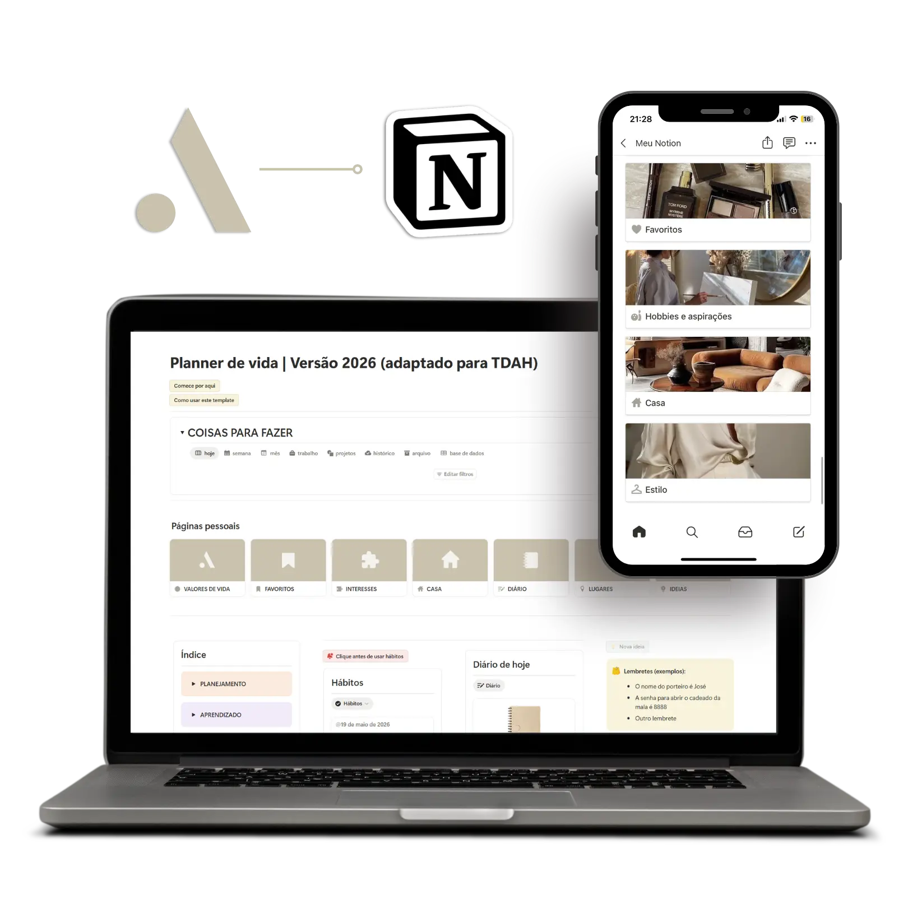
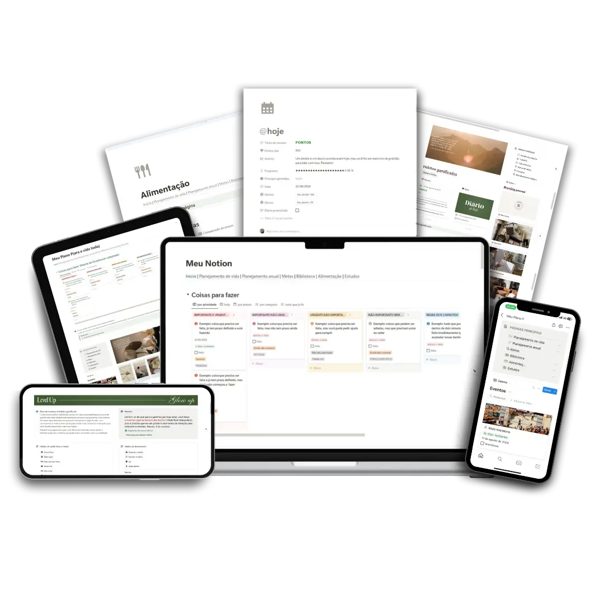
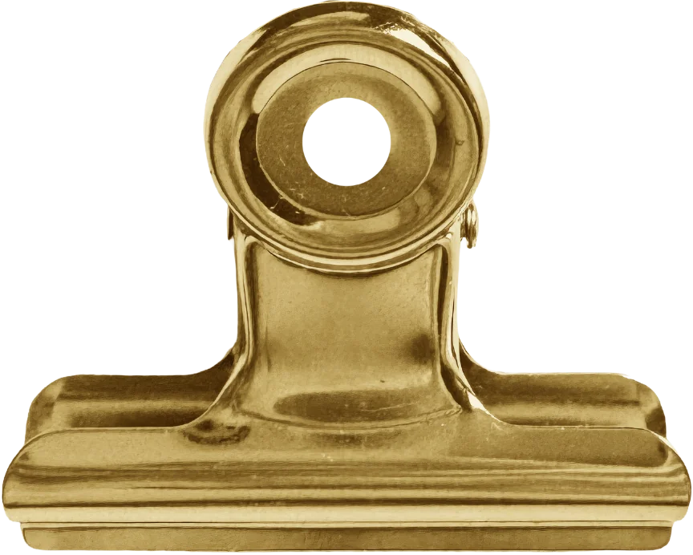

“Modelo de fácil acesso e prático, tudo separado por temas bem organizado. Parabéns.”
Tem um pedacinho da sua vida em cada aplicativo e caderno...
Modelos prontos e personalizáveis
Sem mensalidade
Compatível com o ChatGPT e o Claude

O planner digital de quem vive com várias abas abertas na cabeça e no computador ao mesmo tempo
Todas as áreas da sua vida planejadas e organizadas em um espaço seguro que gerencia sua rotina sem julgamentos.
Quero meu plannerSem o planner
Sua rotina espalhada em vários lugares
Agenda em um aplicativo, hábitos em outro, anotações no bloco de notas, metas perdidas, lembretes soltos e ideias que ficam pelo caminho. É lógico que você não vai conseguir dar conta de tudo né, minha flor!
Com o planner Ponto A
Sua vida organizada em um sistema só
Junta a sua rotina, metas, hábitos, ideias, projetos, trabalho, estudos, enfim, qualquer planejamento em um único lugar pra gastar menos tempo procurando informações e sobrar espaço pra viver.
RotinaTarefas recorrentes com contagem regressiva de prazo e subtarefas criadas automaticamente.MetasMetas anuais e de vida, com controle de subtarefas e sistema de recompensa.HábitosO essencial para ser saudável, com liberdade para customizar o que importa na sua rotina.PlanejamentoEventos, planejamento do lar, organização de mudança e tudo o que vem pela frente.ProjetosEtapas, entregas e tarefas para dar vida ao que você quer construir.IdeiasBanco de ideias, favoritos e textos pessoais para capturar tudo antes que se perca.EstudosBiblioteca com relatórios de leitura, cursos, matérias, módulos e redação científica.TrabalhoClientes, serviços, demandas e tarefas em uma estrutura funcional.
Único em todo o mercado digital
Não existe um planner digital como este
Feito de humano para humanos, considerando perspectivas que a IA não consegue reproduzir por não experienciar rotina, escolhas, frustrações, emoções, mudanças de fase e histórias de vida.
Baseado em psicologia comportamental & fundamentos da neurociência afetiva
-
01
Sem distrações visuais
Nenhuma decoração rouba o palco do que você realmente precisa bater o olho e encontrar.
-
02
Funções avançadas para leigos e experts
Não importa o seu nível de conhecimento sobre o Notion porque ele é intuitivo até para quem nunca usou.
-
03
Uma página, várias áreas
A mesma página serve para diferentes áreas da vida pela integração de bases de dados, reduzindo a necessidade de criar várias estruturas para o mesmo assunto.
-
04
Alta performance, interpretação rápida
Contagens regressivas, análises com insights de resultados, modelos prontos, criação automática de páginas e visualização funcional das propriedades principais.
-
05
Decisões baseadas em dados
Através dos mostruários, você consegue ter insights sobre vida pessoal, trabalho, estudos e projetos.
-
06
Estrutura legível por IA
Organização pensada para Claude e ChatGPT inspecionarem sem confundir dados, reduzindo respostas genéricas ou inventadas.

Durma tranquila, amada, está tudo no seu devido lugar
Toda a estrutura foi criada para te impulsionar a:
- ✓Transformar a teoria em prática
- ✓Revisar planos e calcular rotas sempre que precisar
- ✓Mudar suas prioridades de vida com coerência
- ✓Não deixar a peteca cair com sua saúde física e mental
O que tem no planner digital Ponto A
Qual área da vida você mais faz questão de organizar?
Selecione uma área para ver as funções específicas.
Branding pessoal
-
Aspirações
Reúna seus principais interesses e tenha um histórico de tudo que aprende ou explora.
-
Estilo pessoal
Seu guarda-roupa registrado e planejado.
-
Compras conscientes
Sistema de investimento consciente com análise antes da compra.
“Ótimo para planejar o visual e as peças que vai comprar.”
Vida pessoal
-
Favoritos
Tudo que você mais gosta em um só lugar para explorar conhecimentos, desenvolver ideias ou salvar recomendações.
-
Lugares
Planeje visitar lugares novos, avalie os que conheceu e organize viagens.
-
Banco de ideias
Espaço para capturar ideias antes que elas se percam.
-
Textos pessoais
Registro de escrita pessoal para se expressar, inspirar projetos ou observar suas emoções.
Saúde mental e física
-
Hábitos e autocuidado
Apenas o essencial para ser saudável, com liberdade para customizar o que for mais importante na sua rotina.
-
Diário guiado
Registro estruturado para observar dias, acontecimentos, emoções e padrões.
-
Cápsula do tempo
Mensagens da sua eu do passado para a eu do presente ou do futuro. Receba a carta quando o dia chegar.
-
Academia
Planeje seu treino e acompanhe seu progresso.
Trabalho e projetos
-
Administração de demandas
Gerencie clientes, serviços, demandas e tarefas em uma estrutura funcional.
-
Projetos
Organize ideias, etapas, entregas e tarefas com liberdade criativa para dar vida ao que você quer construir.
Tarefas de rotina
-
Projetos e trabalho
Tarefas recorrentes com contagem regressiva de prazo e criação automática de subtarefa.
-
Eventos
Planejador de looks e gerenciamento de tarefas relacionadas ao evento.
“Gostei da disposição e da contagem de dias restantes.”
Casa
-
Planejamento do lar
Tarefas e decoração.
-
Organização de mudança
Todas as etapas com progresso.
“Nossa isso é perfeito, obrigada por isso. Meu sonho de menina.”
Metas anuais e de vida
-
Controle de subtarefas
O passo a passo que você precisa para saber para onde está indo.
-
Sistema de recompensa para metas
Motivação constante durante todo o processo.
Estudo
-
Biblioteca
Com autores, gêneros, séries pré-cadastradas e relatórios de leitura.
-
Cursos
Com matérias, módulos, demandas, tarefas, leituras e redação científica.
Avaliações e opiniões
Feedbacks de quem confia no planner
Relatos de usuários que usam templates da produtora.
5 / 5
Nota geral
★★★★★
“É um modelo bonito, bem intuitivo de se usar e funcional, estou adaptando para usar no controle de leituras do meu projeto de IC e está sendo bem satisfatório.”
“Parabéns pelo seu empenho em auxiliar a comunidade de pesquisa e estudo. Bora estudar galera.”
“Abalou muito a querida que fez esse template. Vou usar pra organizar minhas leituras do mestrado e meus escritos.”
“Muito prático e funcional. Deu para organizar minhas leituras.”
Estrategicamente desenvolvido para mentes e x a u s t a s
Baseado em como o cérebro de uma pessoa com TDAH funciona, ajustes foram feitos para tornar a usabilidade ainda mais intuitiva e com menor sobrecarga visual para qualquer pessoa.
Organização por cores funciona como gatilho visual para encontrar informações de forma mais intuitiva. Sem poluição visual, o planner usa as próprias capas de páginas como decoração.
Hub de tarefas categorizado pela própria ação a ser feita, facilitando a tomada de decisão na rotina. Você pode personalizar as frases, reorganizar arrastando páginas ou usar sem categorização.
Para quem tem dificuldade com percepção interna de tempo, datas futuras parecem distantes até virarem urgência. As contagens regressivas reduzem essa dependência.
Status evitam a sensação de que está tudo parado. Ver uma tarefa arquivada traz a certeza de que intencionalmente não foi realizada, não por distrações ou perda de prazos.
Hábitos foca em elementos físicos e mentais que impactam diretamente concentração, regulação emocional e capacidade de iniciar tarefas. Ou seja, focamos no básico que funciona.
Diário guiado é autorregulação na prática. Registrar experiências ajuda a perceber ciclos que a memória emocional do momento pode distorcer.
A cápsula do tempo e os textos pessoais preservam pensamentos, lemas e fases da própria identidade. Ter registros próprios facilita lembrar decisões e valores.
O planejamento de compras com análise de motivos ajuda a pausar antes da decisão, útil para prevenir compras impulsivas feitas no calor do interesse.
PREVIEW
Dá uma espiadinha no seu planner
Só um spoiler de tudo que você consegue fazer

Dúvidas
frequentes
Não. O planner funciona na versão gratuita do Notion. Depois da compra, você duplica o template para a sua própria conta e passa a usar normalmente.
Sim. O mesmo planner pode ser acessado pelo aplicativo do Notion no celular e no tablet ou pelo computador. As informações ficam sincronizadas na mesma conta.
Não, para qualquer ano. Ele já vem estruturado para 2026 e 2027, com a organização necessária para planejar esse período, mas a estrutura também pode continuar sendo usada e adaptada a longo prazo.
Não precisa ter experiência avançada. A estrutura já vem montada para você preencher e consultar no dia a dia, sem precisar construir bancos de dados, fórmulas ou sistemas do zero.
Sim. Você pode alterar textos, categorias, páginas, visualizações e outras partes do template para adaptar o planner à sua rotina e à forma como prefere se organizar.
Comece a liberar espaço na vida para vivê-la de verdade
Tenha um sistema pronto para planejar, organizar e gerenciar sua rotina sem depender de dezenas de aplicativos, abas abertas e estruturas soltas.
Quero meu plannerPONTO A